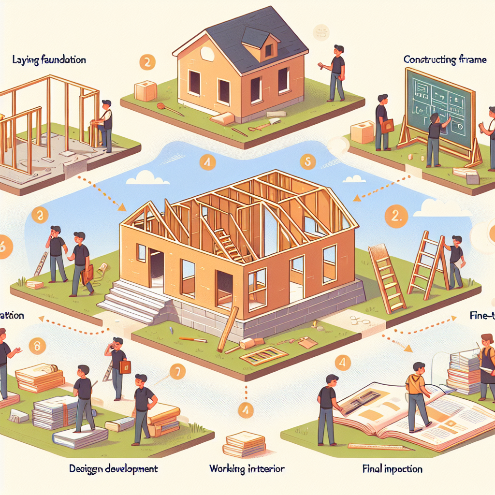
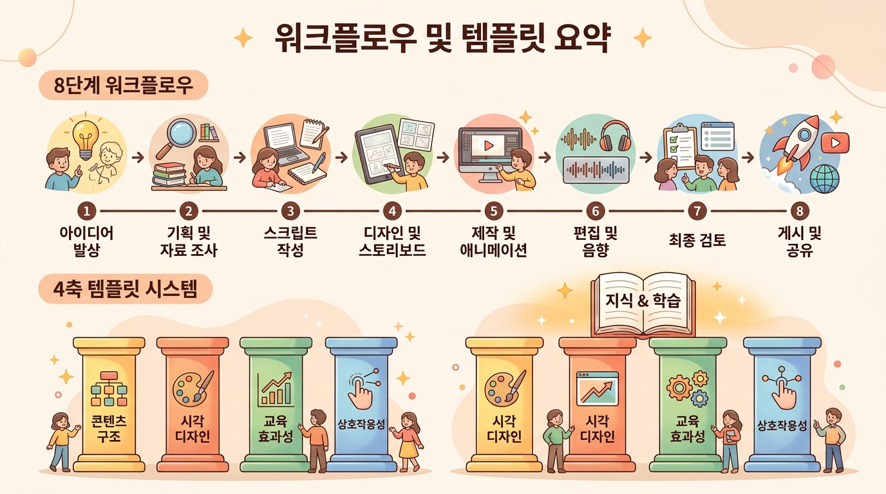

에듀플로 한눈에 보기 — 8단계 워크플로우와 4축 템플릿¶
이 챕터에서 배울 것¶
- 에듀플로의 8단계 워크플로우(Step 0~7) 전체 흐름을 지도처럼 조망할 수 있습니다.
- 4축 템플릿 시스템(HOW·WHAT·WHO·Features)이 각각 어떤 역할을 하는지 구분할 수 있습니다.
- 앞으로 10차시 동안 만들 '나만의 교재 1종'의 주제를 구체적으로 구상합니다.
- 샘플 교재를 열어보며 완성된 결과물의 모습을 미리 체험합니다.
도입 — 설계도 없이 집을 짓는다면¶
1장에서 우리는 "교사는 창작자, AI는 도구"라는 협업 모델을 살펴보았습니다. AI가 빠르게 초안을 만들어주고, 선생님이 교육적 판단으로 방향을 잡아주는 관계였습니다.
그런데 한 가지 질문이 남습니다. 어떤 순서로, 무엇부터 해야 할까요?
집을 짓는 장면을 떠올려 보겠습니다. 아무리 실력 좋은 목수와 최신 장비가 있어도, 설계도 없이 바로 벽돌부터 쌓으면 어떻게 될까요? 1층을 다 올린 뒤에야 "현관 위치가 틀렸네"라고 깨닫게 됩니다. 다시 허물고 새로 쌓아야 합니다.
교재 만들기도 마찬가지입니다. 처음부터 본문을 쓰기 시작하면, 3장을 쓸 때쯤 "1장 구성을 완전히 바꿔야겠는데…"라는 상황이 벌어집니다. 선생님이 주말을 통째로 투자한 작업이 물거품이 되는 겁니다.
에듀플로는 이 문제를 8단계 워크플로우로 해결합니다. 마치 건축의 단계처럼 — 터 잡기, 설계, 골조, 인테리어, 입주 점검까지 — 교재가 단계별로 선명해집니다. 각 단계에서 선생님이 방향을 확인하고 수정할 수 있으니, 나중에 전부 뒤엎을 일이 없습니다.
이번 챕터에서는 이 8단계 전체를 지도처럼 한눈에 조망하겠습니다. 그리고 교재의 성격을 네 가지 축으로 정의하는 4축 템플릿 시스템도 함께 살펴봅니다.

본문¶
1. 전체 지도 — 8단계 워크플로우¶
에듀플로의 워크플로우는 Step 0부터 Step 7까지 총 8단계로 이루어져 있습니다. 각 단계가 무엇을 하는지, 건축 비유와 함께 먼저 전체 그림을 보겠습니다.
| 단계 | 이름 | 건축 비유 | 한 줄 설명 |
|---|---|---|---|
| Step 0 | 프로젝트 관리 | 🏗️ 터 잡기 | 제목·교과·학년 입력, 4축 템플릿 선택 |
| Step 1 | 방향성 논의 | 📐 건축주 상담 | AI와 대화하며 교재의 큰 방향을 결정 |
| Step 2 | 목차 작성 | 🗺️ 설계도 그리기 | Part > Chapter 구조의 목차 생성 |
| Step 3 | 피드백 & 확정 | ✅ 설계 검토 | 목차를 다듬고 최종 확정 |
| Step 4 | 챕터 제작 | 🧱 건물 올리기 | 교재 본문 생성, 교사 실시간 개입 |
| Step 5 | 교육 평가 | 🔍 안전 점검 | 가독성·인지 부하·동기부여·정확성 분석 |
| Step 6 | 인터랙티브 | 🎨 인테리어 | 다이어그램·이미지·퀴즈·코드 실행 삽입 |
| Step 7 | 배포 | 🔑 입주 | 웹사이트·문서로 학생에게 전달 |
핵심 포인트: 화살표가 왼쪽에서 오른쪽으로 흐르지만, 언제든 이전 단계로 돌아갈 수 있습니다. Step 4에서 본문을 쓰다가 목차 구조가 맞지 않다고 느끼면 Step 2로 돌아가면 됩니다. 에듀플로에서는 이전 단계의 작업이 보존되어 있으니 안심하세요.
2. 각 단계 자세히 들여다보기¶
전체 지도를 보았으니, 이제 각 단계를 하나씩 살펴보겠습니다. 지금은 "이런 단계들이 있구나" 정도로 감을 잡으시면 충분합니다. 각 단계의 실제 사용법은 이후 차시에서 하나씩 실습합니다.
Step 0. 프로젝트 관리 — "터 잡기"¶
집을 짓기 전에 가장 먼저 하는 일은 어디에, 어떤 집을 지을지 결정하는 것입니다. Step 0에서는 교재의 가장 기본적인 정보를 입력합니다.
- 제목: 어떤 교재인지 한눈에 알 수 있는 이름
- 교과와 학년: 누구를 위한 교재인지
- 4축 템플릿 선택: 교재의 성격을 네 가지 축으로 정의 (뒤에서 자세히 다룹니다)
이 정보가 이후 모든 단계의 기초가 됩니다. 예를 들어 "초등학생 대상 과학 교재"와 "대학생 대상 프로그래밍 교재"는 문장 길이, 어휘 수준, 예시의 종류가 완전히 달라야 합니다. Step 0에서 이것을 미리 정해두면, AI가 모든 단계에서 이 설정을 일관되게 반영합니다.
Step 1. 방향성 논의 — "건축주 상담"¶
집을 설계하기 전에 건축가는 건축주와 오랜 시간 대화합니다. "가족 구성원이 어떻게 되시나요?", "거실을 크게 쓰시나요, 방을 넓게 쓰시나요?" 이런 질문을 통해 건축주가 미처 말로 표현하지 못한 필요까지 끌어냅니다.
Step 1에서 AI는 바로 이 역할을 합니다. 선생님과 자유롭게 대화하면서 교재의 방향을 잡아갑니다.
대화 예시:
🧑🏫 선생님: "프로그래밍을 처음 접하는 고등학생을 위한 교재를 만들고 싶어."
🤖 AI: "좋습니다. 학생들이 프로그래밍을 배우는 목적이 있을까요? 예를 들어 진로 탐색, 정보 교과 수행평가 준비, 또는 순수한 흥미 같은 것이요."
🧑🏫 선생님: "정보 교과 수업용이야. 실습 중심으로 매 챕터마다 코딩 과제가 있으면 좋겠어."
🤖 AI: "실습 중심이라면 챕터 구조를 '개념 설명 30% + 실습 70%'로 잡는 것이 적절합니다. 혹시 기존에 사용하셨던 학습지나 참고 자료가 있으시면 업로드해 주시겠어요?"
이 대화가 끝나면 AI는 내용을 자동 요약하여 "교재 방향 문서"를 생성합니다. 이 문서가 이후 모든 단계의 나침반이 됩니다.
Step 2. 목차 작성 — "설계도 그리기"¶
방향이 정해졌으니 이제 설계도를 그립니다. AI가 Step 1의 대화 내용을 바탕으로 Part > Chapter 구조의 목차를 제안합니다.
- 각 챕터에 학습 목표, 개요, 예상 소요시간이 포함됩니다
- 선생님이 자유롭게 순서를 바꾸거나, 챕터를 추가·삭제할 수 있습니다
- 선택한 템플릿(HOW 축)에 따라 챕터 내부 구조가 달라집니다
Step 3. 피드백 & 확정 — "설계 검토"¶
건축에서 설계도가 나오면 건축주가 꼼꼼히 검토합니다. "현관 위치를 바꿔주세요", "다용도실이 하나 더 필요합니다" 같은 요청이 오갑니다.
Step 3에서도 마찬가지입니다. AI와 대화하며 목차를 다듬습니다.
- "3장에서 실험 데이터를 직접 다루게 하고 싶어요"
- "5장은 너무 어려울 것 같으니 두 챕터로 나눠줘"
- "이 순서로는 학생들이 이해하기 어려울 것 같아. 4장과 5장의 순서를 바꿔줘"
선생님이 만족하면 목차를 확정합니다. 이 확정된 목차가 Step 4 이후의 뼈대가 됩니다.
Step 4. 챕터 제작 — "건물 올리기"¶
드디어 교재의 본문이 만들어지는 단계입니다. 가장 많은 시간이 걸리지만, 가장 흥미로운 단계이기도 합니다.
에듀플로의 특별한 점은 교사가 실시간으로 개입할 수 있다는 것입니다.
- 전체 생성: 모든 챕터를 한꺼번에 생성
- 개별 생성: 챕터 하나씩 선택해서 생성
- 일시정지: "잠깐, 여기서 멈춰" — 생성 중 방향 전환 가능
- 재개: 수정된 방향으로 계속 생성
AI의 첫 출력은 항상 초안입니다. 선생님의 피드백이 더해져야 비로소 완성됩니다.
Step 5. 교육 평가 — "안전 점검"¶
건물이 올라가면 안전 점검을 합니다. 구조에 문제가 없는지, 소방 시설은 제대로 갖춰졌는지 꼼꼼히 확인합니다.
Step 5에서 AI는 생성된 교재를 네 가지 차원으로 자동 분석합니다.
| 차원 | 측정 내용 | 비유 |
|---|---|---|
| 가독성 | 문장 길이, 어휘 수준, 전문 용어 밀도 | 글씨가 잘 읽히는가 |
| 인지 부하 | 단위당 새 개념 수, 예시 밀도 | 한 번에 너무 많이 담지 않았는가 |
| 동기부여 | 도입 흥미도, 실생활 연결 | 학생이 계속 읽고 싶어하는가 |
| 정확성 | 사실 검증, 개념 정의, 최신성 | 내용에 오류가 없는가 |
특히 강력한 기능은 "자동 개선"입니다. 목표 점수를 설정하면 AI가 평가 → 개선 → 재생성 → 재평가를 자동 반복합니다. 마치 안전 점검에서 문제가 발견되면 보수하고 다시 점검하는 것과 같습니다.
Step 6. 인터랙티브 — "인테리어"¶
건물의 구조가 안전하게 완성되면, 이제 생활하기 좋게 꾸밉니다. 조명을 달고, 가구를 배치하고, 벽에 그림을 걸어 집에 생기를 불어넣습니다.
Step 6에서는 교재에 생명을 불어넣는 요소들을 추가합니다.
- Mermaid 다이어그램: 개념 간 관계나 프로세스를 시각화
- 이미지: AI 생성 또는 교사 직접 업로드
- 코드 실행: 브라우저에서 바로 실행되는 Python, 시뮬레이션(p5.js)
- 퀴즈: 학생이 스스로 이해도를 점검하는 체크포인트
이 요소들은 따로 떨어져 있지 않고, 학습 흐름 안에서 유기적으로 배치됩니다.
Step 7. 배포 — "입주"¶
모든 준비가 끝났습니다. 이제 학생에게 전달하는 일만 남았습니다.
- MkDocs 웹사이트: URL 하나만 공유하면 학생이 바로 접속
- DOCX: Word 문서로 다운로드하여 인쇄 가능
- 테마 자동 적용: 선택한 템플릿에 맞는 시각 디자인이 자동으로 입혀짐
3. 점진적 시각화 — 안개에서 선명한 풍경으로¶
1장에서 잠시 언급했던 점진적 시각화를 다시 떠올려 봅시다. 8단계 워크플로우를 관통하는 핵심 원리입니다.
새벽에 산에 올라간 적이 있으신가요? 처음에는 안개가 자욱해서 아무것도 보이지 않습니다. 해가 뜨면서 서서히 안개가 걷히고, 먼저 큰 산의 윤곽이 보이고, 이어서 나무와 길이 보이고, 마지막에는 풀잎 위의 이슬방울까지 선명하게 보입니다.
에듀플로에서 교재가 만들어지는 과정이 정확히 이렇습니다.
이 방식이 중요한 이유는 단순합니다. 안개 속에서 길을 잘못 들면 한 발짝만 되돌아가면 됩니다. 하지만 선명한 풍경 속에서 길을 잘못 들면? 이미 한참을 걸어온 뒤입니다. 되돌아가는 데 훨씬 오래 걸립니다.
교재도 마찬가지입니다. - Step 1(방향성 논의)에서 방향이 틀렸다면? 대화를 다시 하면 됩니다. 비용은 10분입니다. - Step 4(챕터 제작)에서 방향이 틀렸다면? 본문 전체를 다시 써야 합니다. 비용은 몇 시간입니다.
그래서 에듀플로는 초반 단계(Step 0~3)에 충분한 시간을 쓰도록 설계되어 있습니다. 이 원리를 기억해 두세요. 앞으로 실습을 할 때 "빨리 본문부터 만들고 싶다"는 마음이 들 수 있지만, 초반의 정성이 이후의 시간을 아껴줍니다.
4. 4축 템플릿 시스템 — 교재의 성격표¶
Step 0에서 선택하는 4축 템플릿을 자세히 알아보겠습니다.
에듀플로의 템플릿은 단순한 디자인 템플릿이 아닙니다. 문서의 겉모습만 바꾸는 것이 아니라, 교육 철학을 코드로 표현한 것입니다. 마치 사람의 성격이 여러 차원으로 이루어져 있듯이, 교재의 성격도 네 가지 축으로 정의됩니다.
🔧 HOW — "어떻게 가르칠까?"¶
첫 번째 축은 교수법의 형태입니다. 같은 내용이라도 가르치는 방식에 따라 교재 구조가 완전히 달라집니다.
| 템플릿 | 교육 철학 | 챕터 구조 |
|---|---|---|
| 교과서 | 탐구 학습, 개념 이해 중심 | 학습 목표 → 탐구 → 개념 정리 → 확인 문제 |
| 워크숍 | 실습 중심, 프로젝트 기반 | 도입 → 실습 → 발표 → 피드백 |
| 스토리텔링 | 내러티브 기반, 몰입 학습 | 도입 이야기 → 개념 발견 → 적용 → 마무리 |
| 자기주도 | 자율 학습, 자기 조절 | 사전 점검 → 학습 → 자기 평가 → 심화 |
| 인터랙티브 | 역량 중심, 체험 학습 | 도입 → 체험 → 토론 → 정리 |
| 교사용 가이드 | 4C 모델 | 연결 → 조각 → 창작 → 통합 |
예를 들어 "광합성"을 가르친다고 합시다. - 교과서 형태라면: 실험 관찰 → "잎에서 어떤 일이 일어나는 걸까?" → 광합성 정의 → 확인 문제 - 스토리텔링 형태라면: "식물이 햇빛을 먹는다고?" → 등장인물이 식물의 비밀을 탐험 → 광합성 발견 → 이야기 마무리 - 워크숍 형태라면: 간단한 실험 설명 → 직접 실험 수행 → 결과 발표 → 동료 피드백
같은 "광합성"이지만, 학생이 경험하는 학습 여정이 완전히 다릅니다.
📚 WHAT — "무엇을 가르칠까?"¶
두 번째 축은 교과의 특성입니다. 수학 교재와 국어 교재는 필요한 요소가 다릅니다.
| 템플릿 | 특화 전략 |
|---|---|
| STEM 이론 | 수식, 실험, 데이터 분석 중심 |
| 프로그래밍 | 코드 블록, 단계적 실습 |
| 언어 학습 | 어휘, 문법, 대화 연습 |
| 비즈니스 | 사례 연구, 의사 결정 |
| 예술 실기 | 작품 감상, 창작 활동 |
| 토론/탐구 | 질문 중심, 근거 기반 논증 |
프로그래밍 교재에는 실행 가능한 코드 블록이 필수입니다. 언어 학습 교재에는 대화 연습 시나리오가 필요합니다. WHAT 축을 선택하면 AI가 해당 교과에 맞는 요소를 자동으로 반영합니다.
👤 WHO — "누구를 가르칠까?"¶
세 번째 축은 학습자의 수준입니다. 이 축은 교재의 어휘 수준, 문장 길이, 예시의 밀도를 결정합니다.
| 프로필 | 어휘 수준 | 문장 길이 | 예시 밀도 |
|---|---|---|---|
| 초등학생 | 일상 어휘 | 15자 이내 | 매우 높음 |
| 중학생 | 교과 기초 어휘 | 20자 이내 | 높음 |
| 고등학생 | 교과 전문 어휘 | 25자 이내 | 보통 |
| 대학생 | 학술 어휘 | 30자 이내 | 보통 |
| 교사 연수 | 교육학 전문 어휘 | 제한 없음 | 보통 |
같은 "변수" 개념을 설명한다고 할 때:
- 초등학생 대상: "변수는 이름표가 붙은 상자예요. 상자에 숫자를 넣을 수 있어요."
- 고등학생 대상: "변수(variable)는 값을 저장하는 메모리 공간의 이름입니다. age = 17이라고 쓰면 age라는 변수에 17이 저장됩니다."
WHO 축을 선택하면 이런 차이가 교재 전체에 일관되게 적용됩니다.
⚙️ Features — "어떤 요소를 넣을까?"¶
네 번째 축은 기술적 기능입니다. 교재에 어떤 인터랙티브 요소를 포함할지 선택합니다.
- 코드 블록 (실행 가능)
- 수식 (LaTeX)
- Mermaid 다이어그램
- AI 이미지 생성
- 인터랙티브 HTML (시뮬레이션)
- 퀴즈 체크포인트
- 코드 샌드박스
- 하드웨어 다이어그램
모든 기능을 다 넣을 필요는 없습니다. 교재의 목적에 맞는 기능만 선택하면 됩니다. 예를 들어 국어 교재에서는 코드 블록이 필요 없고, 프로그래밍 교재에서는 코드 샌드박스가 핵심입니다.
5. 4축이 만나면 — 교재의 DNA가 결정된다¶
네 가지 축의 조합이 교재의 전체 성격을 결정합니다. 구체적인 예시를 보겠습니다.
예시 1: 고등학교 정보 교과 프로그래밍 수업 - HOW: 워크숍 (실습 중심) - WHAT: 프로그래밍 (코드 블록, 단계적 실습) - WHO: 고등학생 (교과 전문 어휘, 25자 이내) - Features: 코드 블록, 코드 샌드박스, 퀴즈 체크포인트
→ 챕터마다 짧은 개념 설명 후 바로 코딩 실습이 이어지고, 브라우저에서 코드를 직접 실행해볼 수 있으며, 각 실습 후 자기 점검 퀴즈가 나오는 교재가 만들어집니다.
예시 2: 초등학교 과학 시간 — 날씨 단원 - HOW: 스토리텔링 (내러티브 기반) - WHAT: STEM 이론 (실험, 데이터 관찰) - WHO: 초등학생 (일상 어휘, 15자 이내) - Features: 이미지 생성, Mermaid 다이어그램, 퀴즈
→ "날씨 탐정 민수"가 주인공인 이야기를 따라가며 구름의 종류를 발견하고, 그림으로 개념을 확인하고, 간단한 퀴즈로 마무리하는 교재가 만들어집니다.
같은 에듀플로, 완전히 다른 교재. 4축 템플릿 시스템 덕분입니다.
실습 — 샘플 교재 체험 & 나만의 주제 구상¶
이제 직접 손을 움직여 볼 시간입니다. 이번 실습은 두 부분으로 나뉩니다.
실습 1: 샘플 교재 열어보기¶
에듀플로에서 이미 완성된 샘플 교재를 열어보며, 앞으로 만들 결과물의 모습을 미리 체험합니다.
실습 순서:
- 에듀플로에 로그인합니다.
- 메인 화면에서 "샘플 교재" 섹션을 찾습니다.
- 관심 있는 교과의 샘플 교재를 하나 선택하여 엽니다.
- 아래 관찰 체크리스트를 따라가며 교재를 살펴봅니다.
관찰 체크리스트:
| 관찰 항목 | 확인 |
|---|---|
| 챕터의 도입부는 어떻게 시작하나요? (질문? 이야기? 사례?) | ☐ |
| 새로운 개념을 설명할 때 비유가 사용되고 있나요? | ☐ |
| 다이어그램이나 이미지는 어떤 위치에 배치되어 있나요? | ☐ |
| 퀴즈나 확인 문제는 어디에 나오나요? | ☐ |
| 챕터의 마무리는 어떤 내용으로 끝나나요? | ☐ |
| 이 교재의 HOW 축(형태)은 무엇일 것 같나요? | ☐ |
관찰의 목적: 이 실습은 "에듀플로 사용법을 익히는 것"이 아닙니다. 완성된 교재가 어떤 모습인지 미리 보는 것이 목적입니다. 목적지를 알아야 여행 계획을 세울 수 있으니까요.
실습 2: 나만의 교재 주제 구상하기¶
앞으로 10차시에 걸쳐 교재 1종을 완성하는 것이 이 과정의 최종 목표입니다. 지금 주제를 정하면, 매 차시의 실습이 자연스럽게 연결됩니다.
아래 질문에 답하며 주제를 구체화해 보세요. 완벽하지 않아도 괜찮습니다. Step 1(방향성 논의)에서 AI와 대화하며 다듬을 수 있습니다.
📋 나만의 교재 기획서 (초안)
1. 교재 제목 (가제):
예) "처음 만나는 파이썬 — 고등학생을 위한 프로그래밍 첫걸음"
2. 대상 학생:
- 학년:
- 사전 지식 수준:
- 특징 (예: "실험을 좋아하지만 이론에 약함"):
3. 교과 및 단원:
예) 정보 교과 — 프로그래밍 기초
4. 이 교재의 목적:
예) "학생들이 프로그래밍의 기본 개념을 이해하고,
간단한 프로그램을 스스로 작성할 수 있게 한다"
5. 예상 분량:
- 전체 챕터 수:
- 챕터당 예상 소요시간:
6. 4축 템플릿 (잠정 선택):
- HOW (형태): [교과서 / 워크숍 / 스토리텔링 / 자기주도 / 인터랙티브 / 교사용 가이드]
- WHAT (교과): [STEM 이론 / 프로그래밍 / 언어 학습 / 비즈니스 / 예술 실기 / 토론·탐구]
- WHO (학습자): [초등학생 / 중학생 / 고등학생 / 대학생 / 교사 연수]
- Features (기능): [코드 블록 / 수식 / 다이어그램 / 이미지 / 퀴즈 / 기타: ]
💡 팁: 주제 선정이 어렵다면 이 질문을 스스로에게 던져보세요. - "내 수업에서 학생들이 가장 어려워하는 부분은?" - "매번 학습지를 새로 만들어야 해서 번거로운 단원은?" - "기존 교과서만으로는 부족하다고 느끼는 영역은?"
이 질문에 대한 답이 곧 교재의 주제가 됩니다.
정리¶
이번 챕터에서 다룬 핵심을 세 줄로 정리합니다.
- 8단계 워크플로우(Step 0~7)는 "안개 속 아이디어"를 "선명한 교재"로 만드는 여정입니다. 각 단계에서 교사가 방향을 확인하고 수정할 수 있으므로, 나중에 전부 뒤엎을 일이 없습니다.
- 4축 템플릿(HOW·WHAT·WHO·Features)은 교재의 성격을 네 가지 차원으로 정의합니다. 같은 내용이라도 축의 조합에 따라 완전히 다른 교재가 만들어집니다.
- 초반 단계(Step 0~3)에 충분한 시간을 투자하는 것이 결국 전체 시간을 줄여줍니다. 설계도를 꼼꼼히 그려야 건물을 한 번에 올릴 수 있습니다.

성찰 질문¶
오늘 배운 내용을 되새기며 아래 질문에 답해 보세요.
- 에듀플로가 한 번에 완성품을 만들지 않고 단계별로 선명해지는 방식을 택한 이유는 무엇인가요?
- 4축 템플릿 중 HOW 축에서 "교과서"와 "워크숍"을 선택했을 때, 학생의 학습 경험은 어떻게 달라질까요?
- 실습 2에서 구상한 '나만의 교재'에 대해 — 왜 이 주제를 선택했나요? 이 교재가 완성되면 수업이 어떻게 달라질까요?
다음 챕터 미리보기¶
이번 챕터에서 8단계 워크플로우의 전체 지도를 펼쳐 보았습니다. 다음 챕터에서는 Step 0(프로젝트 관리)과 Step 1(방향성 논의)을 직접 실습합니다. 에듀플로에서 새 프로젝트를 만들고, AI와 첫 대화를 나누며 교재의 방향을 잡아가는 경험을 하게 됩니다. 실습 2에서 작성한 "나만의 교재 기획서"를 꼭 가져오세요 — 그것이 AI와의 대화의 출발점이 됩니다.